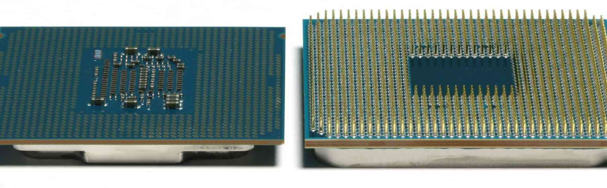
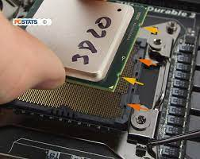

Instalação da CPU e Gestão Térmica
A instalação do processador é o momento de maior risco físico. Um pino dobrado pode inutilizar uma placa-mãe de alto custo instantaneamente. Este módulo ensina o procedimento correto passo-a-passo.

1. Conhecer Seu Socket - LGA vs PGA
Antes de abrir o cooler, VERIFIQUE qual tipo sua placa tem! A instalação é completamente diferente.
PGA (AMD AM4): Os pinos estão NA CPU. Menos frágeis, mas entorta ao remover cooler sem cuidado. Sempre "gire" o cooler antes de puxar.
✓ Ação: Consulte o manual da sua placa-mãe em casa no timoteo um look. Se não souber, procure no site do fabricante.

2. O Encaixe ZIF - Alinhamento Correto
ZIF significa "Zero Insertion Force" = Não use força! Se está travando, está errado.
① Abra totalmente a TRAVA da socket (alavanca lateral sobe até ficar horizontal)
② Segure a CPU pelos lados • NUNCA pelos contatos
③ Procure os TRIÂNGULOS DOURADOS (um na CPU, um na socket)
④ Alinhe-os EXATAMENTE
⑤ Coloque a CPU no socket SEM FORÇA
⑥ Baixe a trava até travar (deve fazer "clique" automático)
⚠️ SINAL DE ERRO: Se precisar forçar, ESPERE! Está posicionada errada. Levante a trava e tente novamente.

3. Aplicando Pasta Térmica - A Quantidade Correta
Quantidade errada = temperaturas altas! Pouca disserve hot-spots; muita isola o calor como um escudo.
• Pouca quantidade: Um grão de milho no CENTRO da CPU
• Aplicar: Deixe o cooler pressionar (nunca espalhe com dedo!)
• CPUs com chiplets: Se tem múltiplos núcleos separados, pinte um padrão de "X" ou "5 pontos"
✓ Quantidade ideal: Quando montar cooler, a pasta deve "vazar" um pouco nas laterais. Se não vazar = pouca; se vazar demais = excessiva.
⚠️ NUNCA espalha com dedo! A oleosidade torna a pasta pior e pode deixar pegadas que reduzem condutividade.

4. Montando o Cooler - Pressão Uniforme
Aperto errado = pasta sai de um lado só, deixando hot-spots. A placa-mãe pode ainda rachar microscopicamente.
1. Posicione cooler reto acima da CPU
2. Aperte LEVEMENTE o parafuso 1 (esquerda-superior)
3. Aperte LEVEMENTE o parafuso 3 (direita-inferior) - diagonal oposta!
4. Agora aperte LEVEMENTE o parafuso 2 (direita-superior)
5. Aperte LEVEMENTE o parafuso 4 (esquerda-inferior) - diagonal
6. SOMENTE APÓS todos estarem encaixados, aperte cada um FIRME (mas não com toda força!)
✓ Essa ordem em "X" garante pressão igual em todos os pontos. Se apertar um lado antes = risco de dano!

5. Conexão do Cooler - Monitoramento Crítico
Conectar no header errado = CPU superaquece silenciosamente! A placa-mãe não sabe aumentar ventilação.
① Localize na placa-mãe: CPU_FAN (procure este rótulo no manual ou visualmente perto do socket)
② Plug do cooler tem 4-pinos tipicamente (às vezes 3)
③ Encare com CUIDADO (tem um pequeno clipe de segurança)
④ NUNCA use SYS_FAN, CHA_FAN, ou outros headers!
⚠️ MUITO IMPORTANTE: Se ligar no header errado, o PC pode:
• Não reconhecer velocidade do ventilador
• Sistema de proteção não funciona
• CPU desliga de surpresa quando quente (thermal shutdown)
✓ Teste: Ligue o PC e entre em BIOS. Procure por "CPU Fan Speed" - deve mostrar RPM. Se 0 RPM = conexão solta!
Pronto para o Stress Test?
A montagem correta da CPU define a estabilidade de todo o sistema. Teste seus conhecimentos técnicos agora.